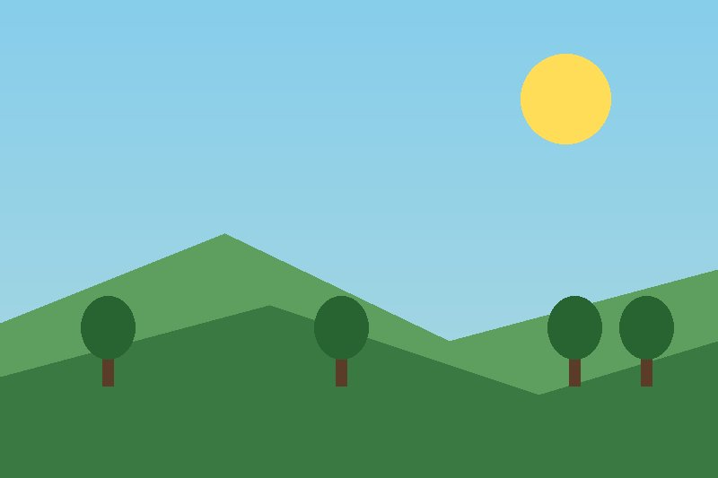

Welcome to the site. This page covers some key web development terms and demonstrates working with images.
| Term | Definition |
|---|---|
| Deprecated | A feature or element that is outdated and no longer recommended for use, though it may still work. |
| Responsive Design | An approach to web design that makes pages render well on a variety of devices and window or screen sizes. |
| User Experience | The overall experience a person has when interacting with a website, including ease of use and satisfaction. |

The PNG version of this image is about 5.6 KB, while the JPG version is about 16 KB — larger, not smaller. That's because this graphic is made mostly of flat, solid-colored shapes (hills, trees, a sun) with a smooth sky gradient. PNG's lossless compression handles large areas of solid color very efficiently, while JPG's compression works by breaking the image into blocks and approximating color transitions, which adds overhead on a gradient like the sky and can introduce subtle blocky artifacts. Visually, the JPG looks very close to the PNG, but if you zoom in on the sky gradient you can see slight discoloration and softness that isn't present in the crisper PNG version.